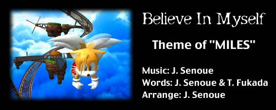

When all alone in my chair, I just go about wishin'
I wanna be strong, I really wanna be trusted
When all alone in my bed, I just go about yearnin'
I wanna be cool, I also wanna be like him
But that's not somethin' I can do so easily
This is not simply my way, my style
Gotta get a hold of my life
I wanna fly high
So I can reach the highest of all the heavens
Somebody will be
Waiting for me so I have gotta fly higher
Gotta keep goin'
Everything is a brand new challenge for me
I will believe in myself
This is the only start for me
When all alone in my sleep
I just go about dreamin'
I see myself there
having the same adventure
If I just follow you
I will never see the light
Now's the time to find my way through this life
I'm tryin' so hard to be strong
I wanna fly high
So I can reach the highest of all the heavens
Somebody will be
Waiting for me so I have gotta fly higher
Gotta keep goin'
Everything is a brand new challenge for me
I will believe in myself
This is the only start for me
(Guitar solo)
Many friends help me out
In return I help them
Certain things I can do and there are things that only I can do
No one's alone
I wanna fly high
So I can reach the highest of all the heavens
Somebody will be
Waiting for me so I have gotta fly higher
Gotta keep goin'
Everything is a brand new challenge for me
I will believe in myself
This is the only start for me